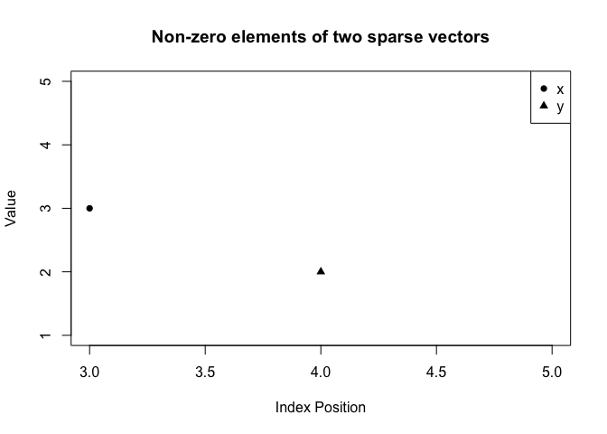

The goal of sparseNumeric is to provide a class for sparse numeric vectors and a set of methods to work with them without ever converting to a dense vector.
A sparse_numeric object stores: - value: the non-zero entries - pos: their positions - length: the full length of the underlying vector
The package implements arithmetic, summary, and utility methods such as: - sparse_add(), sparse_sub(), sparse_mult(), sparse_crossprod() - sum(), mean(), norm(), standardize() - plot() and show() methods for visualization and printing
Installation
You can install the development version of sparseNumeric like so:
# install.packages("devtools") # if needed
devtools::install_github("druthipalle/sparseNumeric")
#> Using GitHub PAT from the git credential store.
#> Downloading GitHub repo druthipalle/sparseNumeric@HEAD
#> ── R CMD build ─────────────────────────────────────────────────────────────────
#> checking for file ‘/private/var/folders/c_/zwvmhty113b4mqm71k50xd100000gn/T/RtmpedPWHf/remotesd53376de54bd/druthipalle-sparseNumeric-f2b40e9/DESCRIPTION’ ... ✔ checking for file ‘/private/var/folders/c_/zwvmhty113b4mqm71k50xd100000gn/T/RtmpedPWHf/remotesd53376de54bd/druthipalle-sparseNumeric-f2b40e9/DESCRIPTION’
#> ─ preparing ‘sparseNumeric’:
#> checking DESCRIPTION meta-information ... ✔ checking DESCRIPTION meta-information
#> ─ checking for LF line-endings in source and make files and shell scripts
#> ─ checking for empty or unneeded directories
#> Omitted ‘LazyData’ from DESCRIPTION
#> ─ building ‘sparseNumeric_0.1.0.tar.gz’
#>
#> Example
This is a basic example which shows you how to solve a common problem:
library(sparseNumeric)
#>
#> Attaching package: 'sparseNumeric'
#> The following object is masked from 'package:base':
#>
#> norm
## create a dense vector
x_dense <- c(0,0,3,0,5)
## convert to spare_numeric
x_sp <- sparse_numeric(x_dense)
x_sp
#> sparse_numeric vector of length 5
#> pos value
#> 3 3
#> 5 5
## length
length(x_sp)
#> [1] 5
## sum and mean
sum(x_sp)
#> [1] 8
mean(x_sp)
#> [1] 1.6
## euclidean norm
norm(x_sp)
#> [1] 5.830952
## standardize
x_std <- standardize(x_sp)
x_std
#> [1] -0.6949956 -0.6949956 0.6081211 -0.6949956 1.4768656
mean(x_std) # should be ~0
#> [1] -8.881784e-17
sd(x_std) # should be ~1
#> [1] 1
## arithmetic and dot product
y_dense <- c(1,0,0,2,0)
y_sp <- sparse_numeric(y_dense)
## elementwise operations
sparse_add(x_sp, y_sp)
#> sparse_numeric vector of length 5
#> pos value
#> 1 1
#> 3 3
#> 4 2
#> 5 5
sparse_sub(x_sp, y_sp)
#> sparse_numeric vector of length 5
#> pos value
#> 1 -1
#> 3 3
#> 4 -2
#> 5 5
sparse_mult(x_sp, y_sp)
#> sparse_numeric vector of length 5
#> (all elements are zero)
## dot product
sparse_crossprod(x_sp, y_sp)
#> [1] 0
plot(x_sp, y_sp)